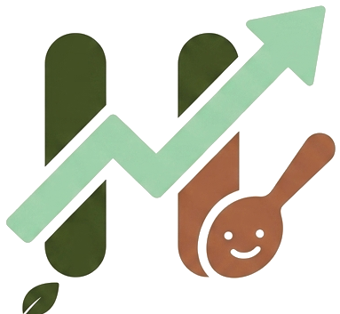

나만의 노트
AI에게 물어보기
저장한 노트를 바탕으로 정리해 드려요. 예: “금리 관련만 정리해줘”
저장한 학습 내용
오늘의 이슈 종목
오늘 뉴스·이슈와 연결된 상위 종목의 기업정보와 핵심 포인트예요 (교육 목적 · 매수 추천 아님)
경제지도
금리 → 환율 → 원자재 → 업종
인과 관계를 한눈에 보는 경제지도는
다음 버전(v2)에서 만나요.

저장한 노트를 바탕으로 정리해 드려요. 예: “금리 관련만 정리해줘”
오늘 뉴스·이슈와 연결된 상위 종목의 기업정보와 핵심 포인트예요 (교육 목적 · 매수 추천 아님)
금리 → 환율 → 원자재 → 업종
인과 관계를 한눈에 보는 경제지도는
다음 버전(v2)에서 만나요.